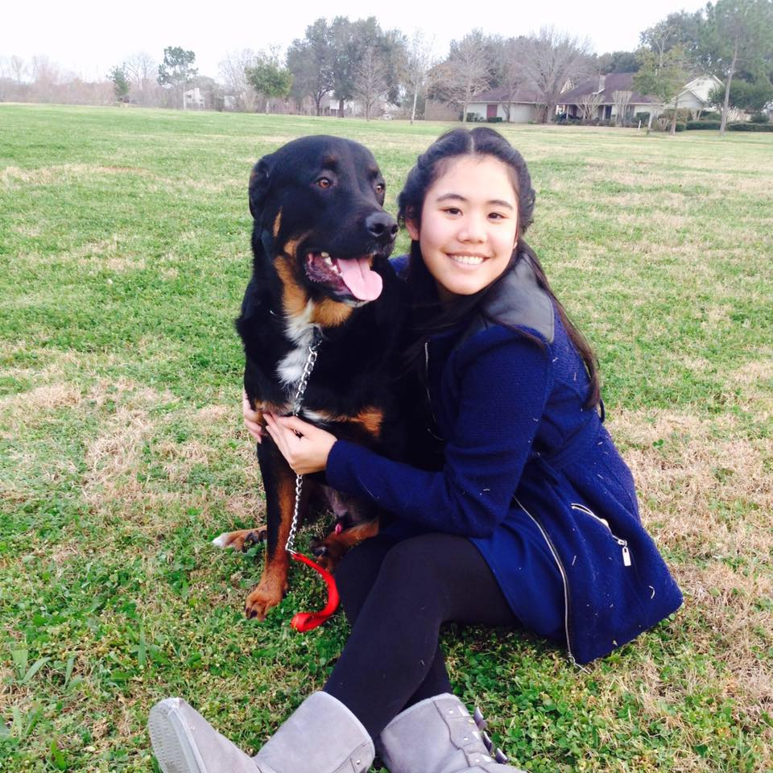

About Me

My name is Chanita Nuansri. It is pronouced "Cha-ni-ta" "Nuan-sri". My family called me by my nickname, Peach. I was born in Thailand; it is very common for Thai person to have a nickname that friends and family used to call you. I am a 23 years old who just graduated with a BS in Chemistry last year. Since then I have not been doing much other than managing my own business that I started in 2014. Starting my own business was very challenging and fun when I first started, but after 2 years in everything is starting to settle down. All I have to do is some managing work that require no more than 5 hours a week. The business is growing nicely, profit is made, and I am satisfied.
As good as that sounds, I now have a lot of time on my hand. I want to find something else to do with my time, something that I can do while still having enough time for my business if I have to. From what I heard, coding seems to be a perfect path. Therefore, I am enrolling in the UT Coding Boot Camp. Hopefully, I will be a fully equipped to do some coding work when I am done.